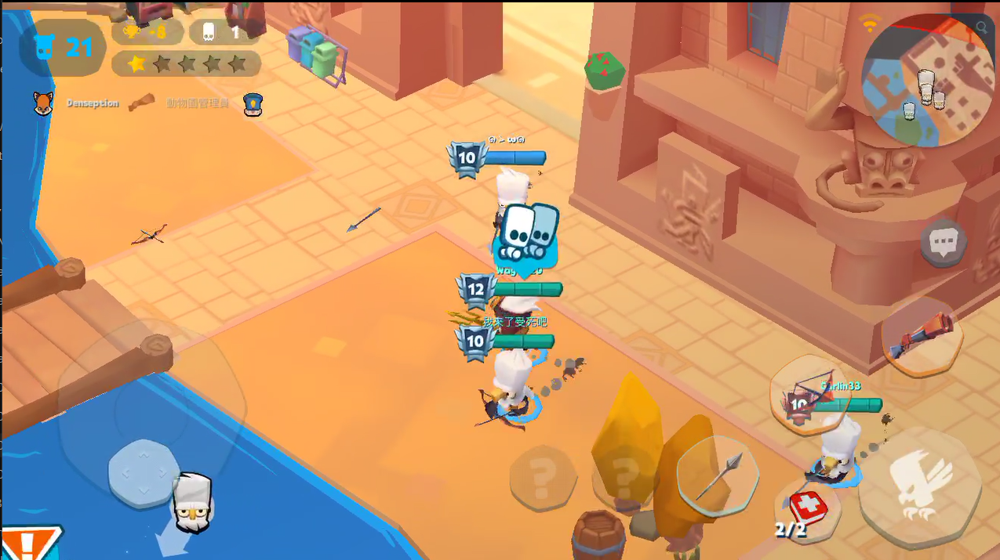

拆解重複步驟
把練等與任務分開整理，找出每輪會重複出現的輸入，讓不同目的的流程可以各自維護。
BLUESTACKS / GAME AUTOMATION
BlueStacks 練等與任務自動化
將遊戲中反覆進行的練等與任務操作整理成可重播的腳本，讓操作順序、等待與循環有一致的安排。
看看腳本流程
01 / WORKFLOW
以下用四個階段示意腳本的操作順序。實際按鍵、畫面與等待時間依遊戲設定。
START / 固定起點
先將遊戲放在預定的起始畫面，讓腳本的第一個操作有一致的位置與順序。
02 / DESIGN THINKING
自動化的價值，來自可重複的操作流程。先釐清起點、順序與等待，才能減少每次都重新操作的負擔。
把練等與任務分開整理，找出每輪會重複出現的輸入，讓不同目的的流程可以各自維護。
輸入與畫面轉換需要配合。流程說明保留等待階段，呈現腳本如何銜接前後操作。
清楚標示一輪從哪裡開始、在哪裡結束。當畫面偏離預期時，需要停止並調整，避免繼續累積錯誤操作。
03 / PROJECT SCOPE
這個作品以已完成的練等與任務腳本為主，呈現將人工步驟整理成可重播流程的實作經驗，也是一種 RPA 操作自動化的應用情境。
BlueStacks 的巨集可錄製與重播操作序列，並設定重複次數及間隔；Script 功能則可將一連串操作綁定至快捷鍵。這些是工具本身的能力，實際作品功能以上方介紹為準。